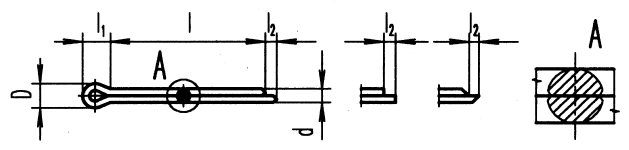
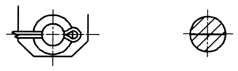

Příklad označení ocelové závlačky jmenovitého průměru d = 1,6 mm, délky l = 50 mm, bez úpravy povrchu:
ZÁVLAČKA ČSN 02 1781.00 – 5×50
| d | 0,6 | 0,8 | 1 | 1,2 | 1,6 | 2 | 2,5 | 3,2 | 4 | 5 | 6,3 | 8 | 10 | 13 | 16 | 20 |
|---|---|---|---|---|---|---|---|---|---|---|---|---|---|---|---|---|
| dmax. | 0,5 | 0,7 | 0,9 | 1,0 | 1,4 | 1,8 | 2,3 | 2,9 | 3,7 | 4,6 | 5,9 | 7,5 | 9,5 | 12,4 | 15,4 | 19,3 |
| dmin. | 0,4 | 0,6 | 0,8 | 0,9 | 1,3 | 1,7 | 2,1 | 2,7 | 3,5 | 4,4 | 5,7 | 7,3 | 9,3 | 12,1 | 15,1 | 19 |
| l2 max. | 1,6 | 1,6 | 1,6 | 2,5 | 2,5 | 2,5 | 2,5 | 3,2 | 4 | 4 | 4 | 4 | 6,3 | 6,3 | 6,3 | 6,3 |
| l2 min. | 0.8 | 0,8 | 0,8 | 1,3 | 1,3 | 1,3 | 1,3 | 1,6 | 2 | 2 | 2 | 2 | 3,2 | 3,2 | 3,2 | 3,2 |
| l1 | 2 | 2,4 | 3 | 3 | 3,2 | 4 | 5 | 6,4 | 8 | 10 | 12,6 | 16 | 20 | 26 | 32,3 | 40 |
| Dmax. | 1 | 1,4 | 1,8 | 2 | 2,8 | 3,6 | 4,6 | 5,8 | 7,4 | 9,2 | 11,8 | 15 | 19 | 24 | 30,8 | 38,6 |
| Dmin. | 0,9 | 1,2 | 1,6 | 1,7 | 2,4 | 3,2 | 4 | 5,1 | 6,5 | 8 | 10,3 | 13,1 | 16,6 | 21,7 | 27 | 33,8 |
| dšroubu min. | 2,5 | 3,5 | 4,5 | 5,5 | 7 | 9 | 11 | 14 | 20 | 27 | 39 | 56 | 80 | 120 | 170 | |
| dšroubu max. | 2,5 | 3,5 | 4,5 | 5,5 | 7 | 9 | 11 | 14 | 20 | 27 | 39 | 56 | 80 | 120 | 170 | - |
| dčepu min. | 2 | 3 | 4 | 5 | 6 | 8 | 9 | 12 | 17 | 23 | 29 | 44 | 69 | 110 | 160 | |
| dčepu max. | 2 | 3 | 4 | 5 | 6 | 8 | 9 | 12 | 17 | 23 | 29 | 44 | 69 | 110 | 160 | - |
POZNÁMKY
Jmenovitý průměr závlačky d se rovná jmenovitému průměru díry d pro závlačku;
První doplňková číslice:
0 … ocel 11 300,11 320 nebo 11 343;
Druhá doplňková číslice:
0 … bez úpravy povrchu
4 … kadmiování (z důvodu ochrany životního prostředí se nedoporučuje)
5 … zinkování
9 … podle zvláštního předpisu.
| d | 0,6 | 0,8 | 1 | 1,2 | 1,6 | 2 | 2,5 | 3,2 | 4 | 5 | 6,3 | 8 | 10 | 13 | |
|---|---|---|---|---|---|---|---|---|---|---|---|---|---|---|---|
| délka l | mezní úchylky | Přibližná hmotnost 1000 závlaček [g] | Přibližná hmotnost 1 závlačky [g] | ||||||||||||
| 4 | ±0,5 | 7 | |||||||||||||
| 5 | 8 | 18 | |||||||||||||
| 6 | 10 | 21 | 38 | ||||||||||||
| 8 | 13 | 27 | 47 | 64 | 138 | ||||||||||
| 10 | ±0,8 | 31 | 57 | 76 | 160 | 286 | |||||||||
| 12 | 65 | 86 | 183 | 324 | |||||||||||
| 14 | 74 | 96 | 204 | 364 | 0,60 | ||||||||||
| 16 | 82 | 107 | 227 | 402 | 0,66 | 1,18 | |||||||||
| 18 | 92 | 117 | 250 | 440 | 0,72 | 1,27 | |||||||||
| 20 | 100 | 131 | 273 | 478 | 0,78 | 1,36 | 2,43 | ||||||||
| 22 | ±1,2 | 294 | 515 | 0,84 | 1,46 | 2,59 | |||||||||
| 25 | 328 | 572 | 0,93 | 1,60 | 2,82 | ||||||||||
| 28 | 363 | 630 | 1,02 | 1,75 | 3,06 | 5,1 | |||||||||
| 32 | 407 | 705 | 1,14 | 1,94 | 3,38 | 5,6 | |||||||||
| 36 | 452 | 783 | 1,28 | 2,14 | 3,70 | 6,1 | 10,7 | ||||||||
| 40 | 860 | 1,38 | 2,32 | 4,04 | 6,6 | 11,5 | |||||||||
| 45 | 2,56 | 4,44 | 7,3 | 12,7 | |||||||||||
| 50 | 2,80 | 4,84 | 7,8 | 13,6 | 23,5 | ||||||||||
| 56 | ±2 | 3,06 | 5,30 | 8,6 | 14,9 | 25,5 | |||||||||
| 63 | 3,46 | 5,90 | 9,4 | 16,3 | 27,9 | 47,5 | |||||||||
| 71 | 6,50 | 10,4 | 18,0 | 30,7 | 52,0 | ||||||||||
| 80 | ±3 | 7,24 | 11,6 | 19,9 | 33,7 | 57,0 | |||||||||
| 90 | 12,8 | 22,0 | 38,1 | 62,4 | |||||||||||
| 100 | 14,0 | 24,0 | 40,5 | 68,0 | 118 | ||||||||||
| 112 | 26,5 | 43,5 | 74,5 | 129 | |||||||||||
| 125 | 49,0 | 81,5 | 141 | ||||||||||||
| 140 | 54,0 | 89,5 | 154 | ||||||||||||
| 160 | 61,0 | 100 | 173 | ||||||||||||
Kreslení závlaček na výkresech sestavení:
